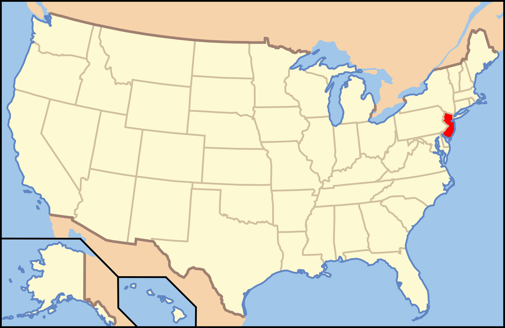

New Jersey

1. Mount Tammany - Worthington State Forest

Juliebl8555NY/Tripadvisor
| Grade: Short |
|---|
| More Images |
| Trail Link |
2. Cape May Point Trail - Cape May Point

Chris Sanfino/Alltrails
| Grade: Short |
|---|
| More Images |
| Trail Link |
3. Hemlock Falls - South Mountain Reservation

Jono Gorman/Alltrails
| Grade: Short |
|---|
| More Images |
| Trail Link |